Bài tập lớn 1
Biểu diễn ảnh màu và lọc tín hiệu
Mục tiêu
Bài tập lớn 1 tập trung vào hai nhóm nội dung chính: biểu diễn ảnh màu - ảnh xám và lọc tín hiệu trong miền không gian.
- Biểu diễn ảnh RGB, chuyển đổi RGB sang grayscale và tái tạo pseudo-color từ ảnh xám.
- Tách từng kênh màu R-G-B, kết hợp lại ảnh gốc và thử nghiệm hoán đổi/thay thế kênh để quan sát thay đổi thị giác.
- Thiết kế pipeline lọc ảnh không gian để chạy thống nhất cho nhiều ảnh và nhiều kernel.
- Đánh giá tác động của bộ lọc low-pass (Box, Gaussian) và high-pass (Sobel, Laplacian) lên chi tiết, biên và nhiễu.
Kết quả chính
Nhóm đã hiện thực quy trình thực nghiệm đầy đủ cho BTL1, từ nạp dữ liệu ảnh, phân tích kênh màu đến so sánh kết quả lọc ảnh trên nhiều dữ liệu khác nhau. Các quan sát nổi bật:
- Ảnh xám giữ cấu trúc cường độ nhưng mất thông tin sắc độ; ảnh pseudo-color chỉ lặp lại cường độ trên 3 kênh nên không khôi phục được màu gốc.
- Mỗi kênh R-G-B đóng góp khác nhau vào chi tiết thị giác; việc hoán đổi kênh tạo sai lệch màu rõ rệt và giúp hiểu bản chất tổng hợp màu.
- Box và Gaussian làm mượt ảnh, giảm nhiễu tần số cao; Gaussian cho kết quả tự nhiên hơn do trọng số tập trung ở tâm kernel.
- Sobel nhấn mạnh biên theo hướng ngang/dọc, trong khi Laplacian phát hiện biên đa hướng và nhạy hơn với chi tiết nhỏ.
Phần 1: Biểu diễn ảnh màu và ảnh xám
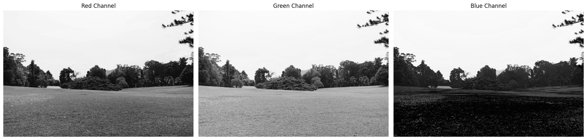
Tách kênh màu RGB
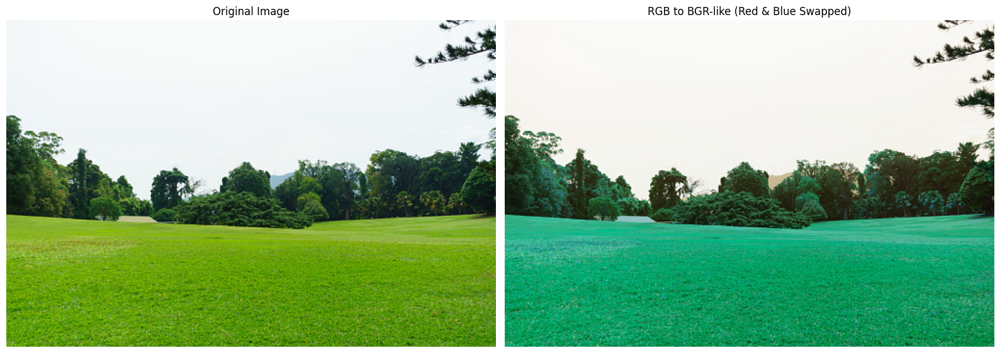
Chuyển từ RGB sang BGR
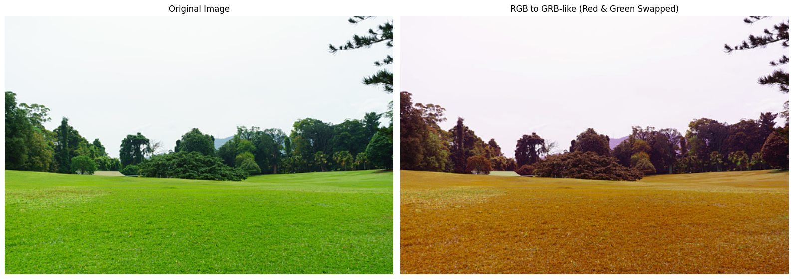
Chuyển từ RGB sang GRB
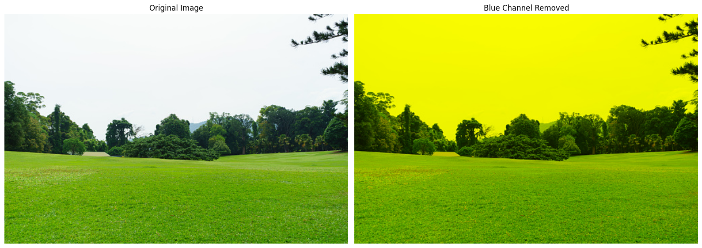
Chuyển từ RGB sang GR (Bỏ channel Blue)
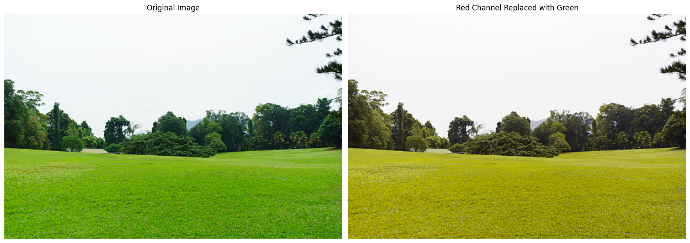
Chuyển từ RGB sang GGB
Phần 2: Lọc ảnh với low-pass và high-pass filter
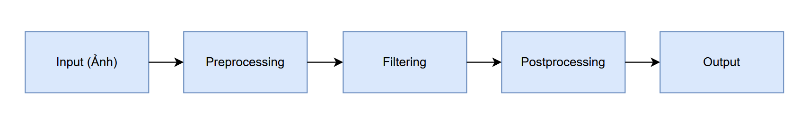
Pipeline xử lí
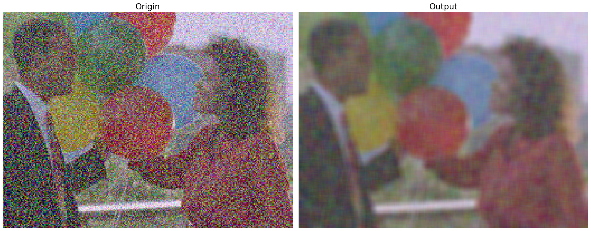
Lọc ảnh với kernel 5x5 (mean)
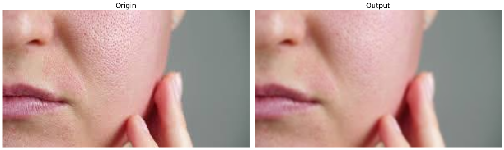
Lọc ảnh với kernel Gaussian (k = 7, sigma = 1.0)
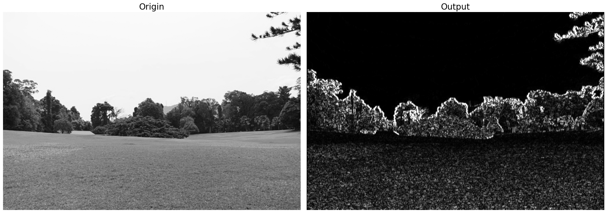
Lọc ảnh với Sobel đứng (3x3)
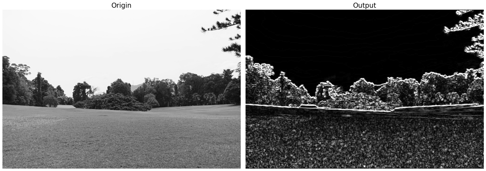
Lọc ảnh với Sobel ngang (3x3)
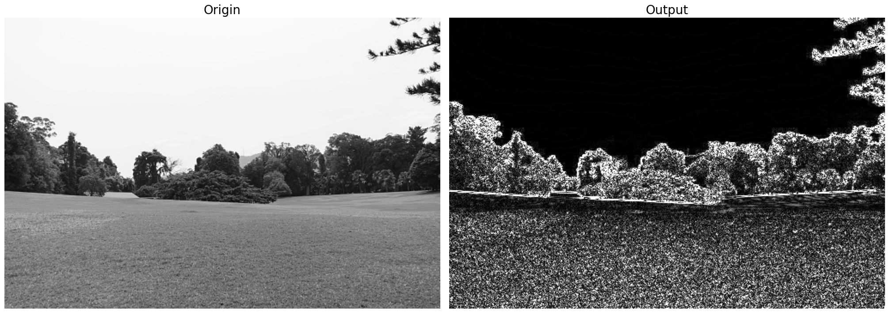
Lọc ảnh với Laplacian (3x3)
Báo cáo
BibTeX
@misc{BTL1_CO3057_2026,
title={Bai tap lon 1: Bieu dien anh mau va loc tin hieu},
author={Vo Van Thinh and Pham Le Tien Dat and Nguyen Duy Tan and Nguyen Tran Anh Quan},
course={CO3057 - Xu ly anh so va Thi giac may tinh},
school={Truong Dai hoc Bach khoa - DHQG HCM},
year={2026},
note={Noi dung gom bieu dien anh RGB/grayscale, tach kenh mau, low-pass va high-pass filtering},
url={https://github.com/ThinhVan27/CV-HK252}
}